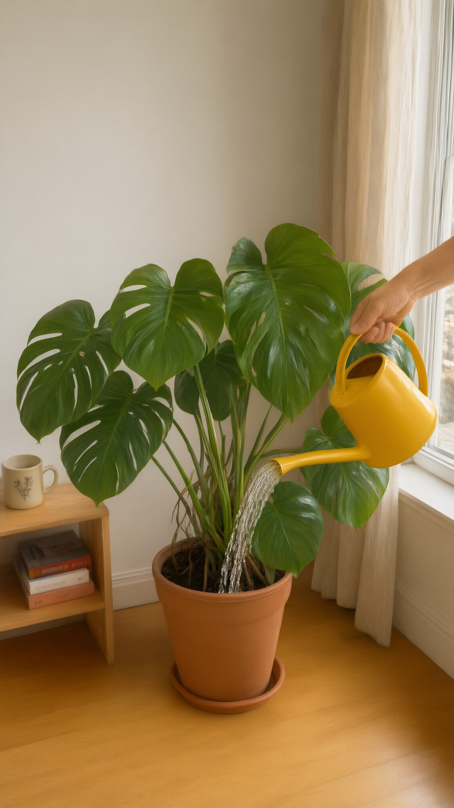
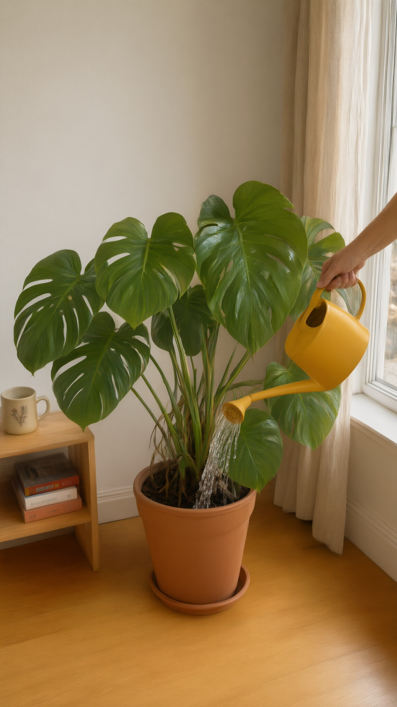

Fernly S01 with a hand (lock v1.2)
Round score 75, usable, fix the listed issues. Best set: H1 + L1. Green border: the best set. Scores are advice; the art director picks.
H · S01: hand pours, edited from L1

H2 74 qwen-edit
Natural hand, plain spout close to the soil, thicker stream. Framed slightly tighter than L1
H1 71 qwen-edit
Natural hand and grip; framing identical to L1. Sprinkler head makes a gentle shower: 'watering', not 'drowning'L · S05 end (kept)
 L1 78 qwen-edit
L1 78 qwen-edit
Kept frame from round 2 (reference for the room)